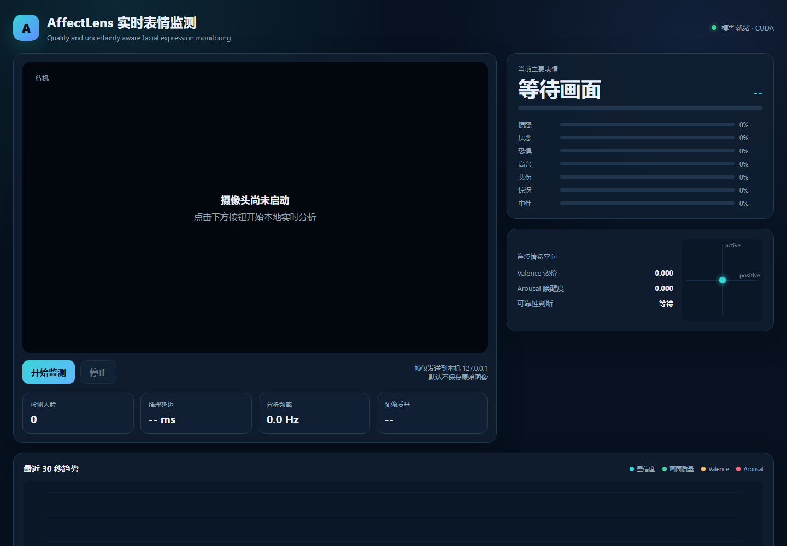

Machine learning机器学习01
AffectLensAffectLens · 表情识别
A seven-class facial expression system connecting model training, calibrated confidence and real-time visual feedback.将模型训练、置信度校准与实时可视化连接起来的七分类人脸表情识别系统。
Research & application研究与应用View project查看项目